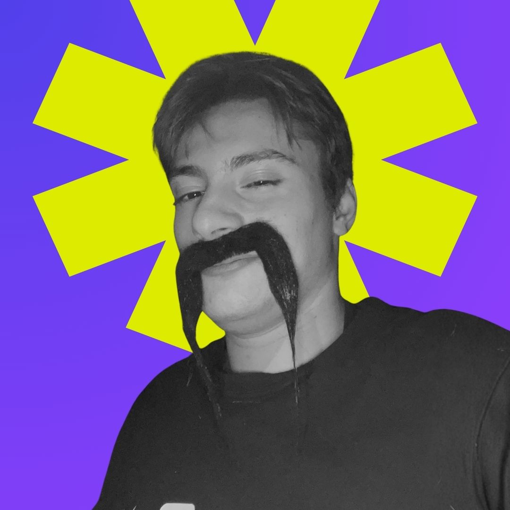

Proxima è un'associazione no-profit nata a Gorgonzola per dare voce e spazio ai ragazzi del territorio. Organizziamo eventi, tornei e concerti pensati da giovani per i giovani.
Crediamo che la comunità si costruisca creando occasioni di incontro reali — fuori dallo schermo, in piazza, nei campi da gioco, negli spazi della città.
Chi rende possibile tutto questo.

Sono loro che, dietro le quinte e in prima linea, rendono possibile ogni iniziativa: senza il loro tempo e la loro energia non potremmo fare nulla.